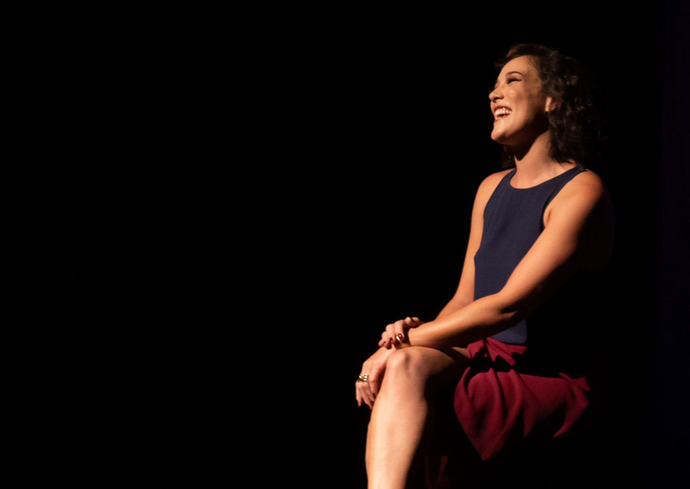

Foto — Nando Machado
Teatro
Adriana Birolli reflete sobre a arte de dizer “não” em comédia solo no Teatro Miguel Falabella
O sucesso “Não! – Uma comédia sobre a dificuldade de dizer não”, estrelado por Adriana Birolli, chega ao Teatro Miguel Falabella, no Norte Shopping (RJ), para d…